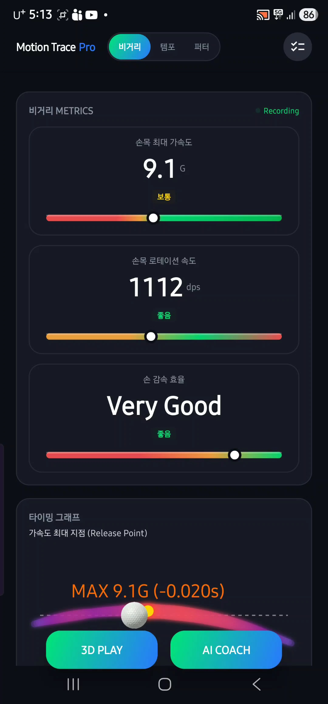
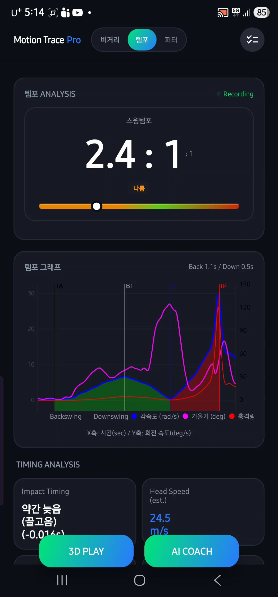
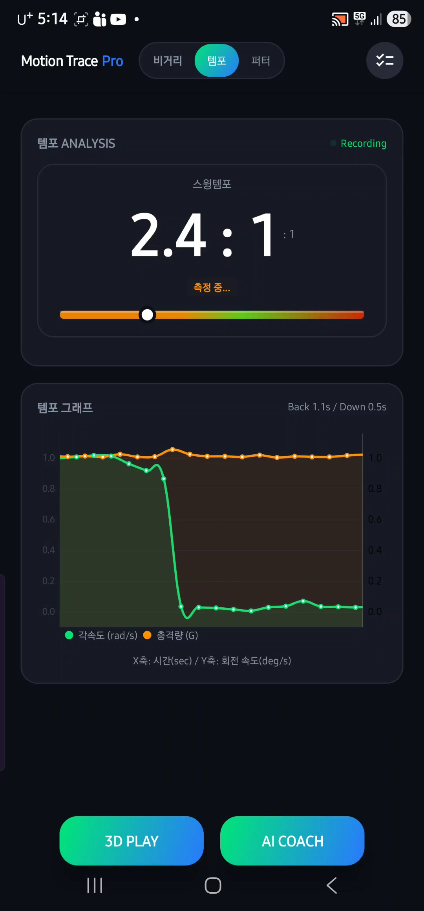
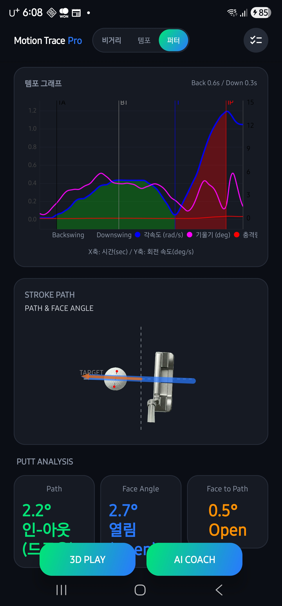
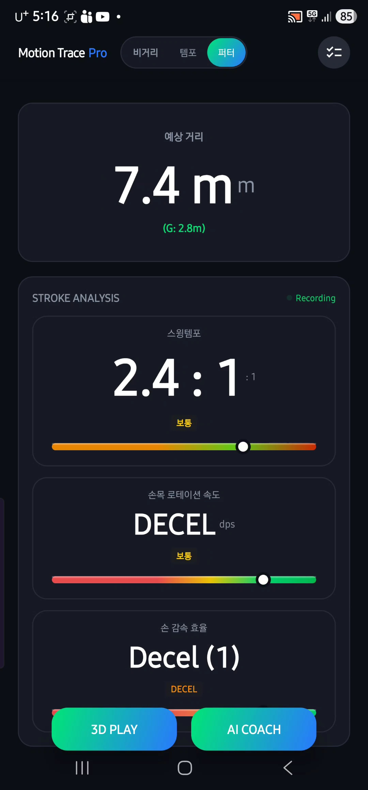

Distance Mode
파워와 에너지 전이 극대화
가속도, 회전 속도, 감속 효율을 중점적으로 모니터링합니다. 임팩트 중심의 타이밍 그래프 관전 포인트입니다.

실시간 기록 확인
매 스윙 후 워치와 연동된 앱에서 상세 숫자를 즉시 확인할 수 있습니다.

Tempo Mode
흔들리지 않는 스윙 리듬
백스윙과 다운스윙의 비율을 정확한 가이드 수치로 확인하세요. 메트로놈 기능과 함께 일관된 타이밍을 훈련할 수 있습니다.

리듬 데이터 축적
나만의 고유한 템포 프로필을 만들어 필드에서도 일관된 샷을 구현하세요.

Putter Mode
정교한 거리감과 터치
퍼팅 스트로크를 분석하여 예상 굴림 거리를 직관적으로 띄워줍니다. 섬세한 감각을 시각화하세요.

퍼팅 궤적 추적
헤드의 흔들림과 손목의 사용도를 분석하여 직선적인 스트로크를 완성합니다.

일관성 점검
성공적인 퍼팅을 위한 데이터 기반의 피드백을 실시간으로 제공합니다.